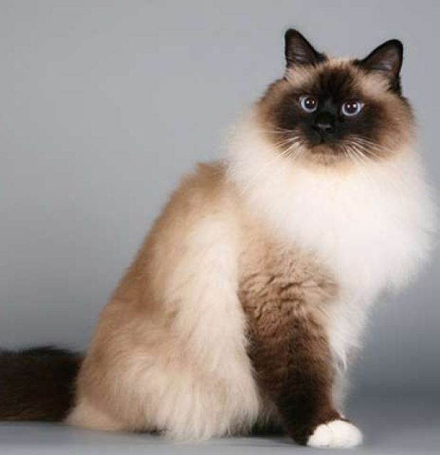
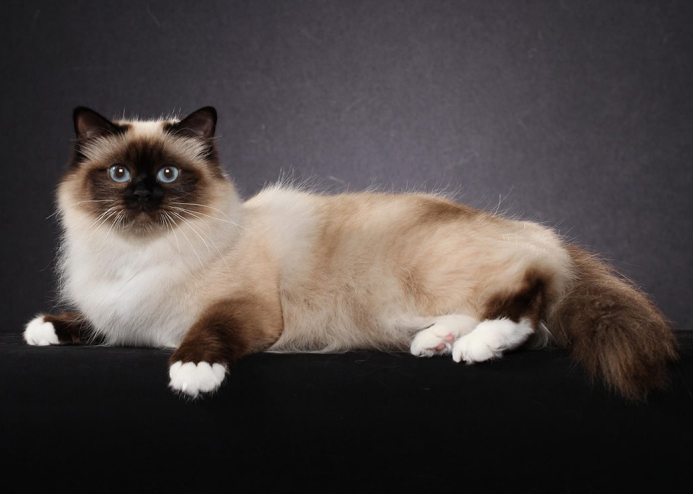

Особливості поведінки та характеру
Якщо говорити про характер Бірми, то це справжній гібрид сіамської і перської кішки. Вона досить спокійна, але в той же час надзвичайно цікава. Як правило, найбільш неспокійний характер спостерігається у кошенят бірманської кішки, які тільки і знають, що бігати і грати, забуваючи про своє священному походження. В цілому навіть дорослі бірманці досить грайливі, проте з часом починають триматися з великою гідністю.
Найбільш підходяща їжа
Збалансований раціон — це ключ до здорового стану цих пухнастиків. Варто зазначити, що бірманська кішка відрізняється інтелігентністю у тому, що стосується прийому їжі. Попри об’єм запропонованої порції, тварина з’їсть стільки, скільки їй потрібно.
Бірманські коти справжні гурмани. Неякісний корм вони їсти не стануть, саме тому для них потрібно підібрати щось унікальне. Можна звісно взагалі запропонувати тварині натуральне харчування, але у такому випадку потрібно ретельно вимірювати порції та використовувані інгредієнти. Набагато легше підібрати оптимальний корм з великою кількістю натурального м’яса.
Варто вибирати харчування з куркою, індичкою чи яловичиною. Також бірманці не проти поласувати рибкою. А ось жирні види м’яса ці коти не полюбляють, та й для організму чотирилапого друга вони не корисні.
Ні в якому разі не потрібно годувати священну бірму зі столу. Людська їжа не призначена для цих тварин. Особливу увагу потрібно приділити копченим та гострим стравам. Такі продукти не мають потрапляти в організм кішки.
Найкращим рішенням стане купівля преміум або супер-преміум корма, який складається не тільки з натурального м’яса та субпродуктів, але й може похвалитися наявністю у складі різноманітних корисних мікроелементів.
У дитячому віці також важливо давати кисломолочні продукти, які сприяють правильному розвитку організму. Їх можна давати й дорослим котам, однак порції цієї їжі потрібно зменшити.
Кошенят потрібно годувати частіше ніж дорослих котів. Протягом дня маленьких пухнастиків треба годувати 4-5 разів. Дорослі коти харчуються 3-4 рази.
